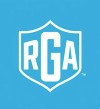

Projects

GCP MFA Control (Simulated)
Modeled a GRC control for privileged-user MFA compliance in GCP to demonstrate governance and audit evidence in the absence of native org-level enforcement.
Why this matters: Privileged account compromise is a common attack vector; this simulated control aligns with NIST SP 800-53 IA-2 and demonstrates how MFA requirements for privileged users would reduces the risk of credential abuse if enforced.
View artifact →
Automated IAM Access Review & Evidence Tracking System
I built a structured IAM access review system in Airtable and Lovable with automated timestamping, evidence validation, and monthly grouping to ensure scalable, audit-ready compliance.
Why this matters: Ensures audit readiness by enforcing documented IAM reviews and evidence. Automated alerts, real-time status flags, and a “Missing Evidence” queue prevent compliance gaps and ensure nothing is overlooked. Enforces the principle: “If it’s not documented, it didn’t happen.”
View artifact→
IAM Access Review Automation System
I built an automated IAM access review system to track reviews, capture evidence, and support audit readiness.
Why this matters: Access reviews are required for compliance, but without proper documentation and evidence, they fail audits. This project demonstrates how automating review tracking, timestamping, and evidence collection can reduce audit delays, enforce least privilege, and enable continuous compliance monitoring.
View artifact→
State Authorization Risk Analysis
Analyzed regulatory and operational risk related to state authorization compliance in higher education environments.
Why this matters: Noncompliance can result in financial penalties, loss of eligibility, and reputational harm.
View artifact →
Turning complex risk assessments into clear, actionable insights with AI.
I created this AI-assisted app to enhance my hands-on learning in conducting risk assessments and to make GRC practices more accessible. The app walks users through the core elements of a risk assessment and includes customizable templates for key security and compliance documents, helping organizations evaluate their security posture and prepare for audits.
View Project
My Cybersecurity YouTube Channel
I create short videos—typically 60–90 seconds—breaking down trending Cybersecurity and GRC headlines. This channel serves as a hands-on lab for applying concepts from Gerald Auger’s GRC Masterclass through TCM Academy.
View Project
Phishing prevention training
I completed the Forage Mastercard phishing job simulation and developed a phishing prevention training presentation intended for teams that underperformed in the phishing email simulation.
View Project